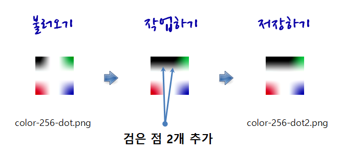
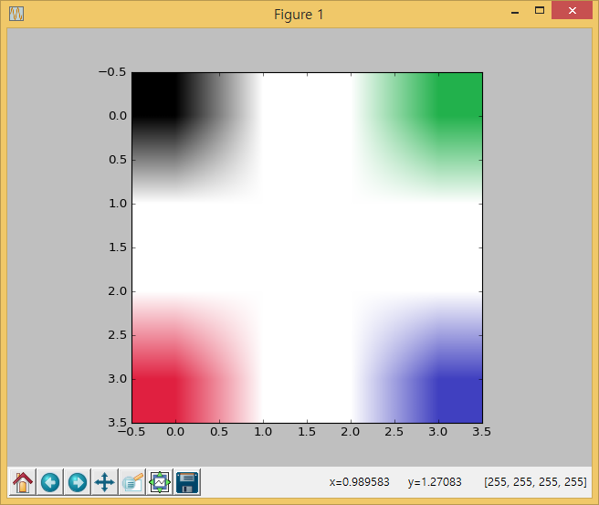

xwMOOC 고생대 프로젝트
OpenCV 맛보기

1. 이미지 불러오기
PIL 파이썬 이미지 라이브러리와 더불어 numpy 라이브러리를 가져온다.
이미지파일을 열어 파이썬 변수에 저장을 한다. 이때 PIL 라이브러리 .open 메쏘드를 사용한다. 그리고 나서, 이미지 객체를 np.asarray 메쏘드로 변환하고 화면에 출력한다.
from PIL import Image
import numpy as np
img256Png = Image.open('../fig/color-256-dot.png')
img256PngArr = np.asarray(img256Png)
print img256PngArr출력결과는 다음과 같다.
[[[ 0 0 0 255]
[255 255 255 255]
[255 255 255 255]
[ 34 177 76 255]]
[[255 255 255 255]
[255 255 255 255]
[255 255 255 255]
[255 255 255 255]]
[[255 255 255 255]
[255 255 255 255]
[255 255 255 255]
[255 255 255 255]]
[[224 32 64 255]
[255 255 255 255]
[255 255 255 255]
[ 64 64 192 255]]]2. 이미지 작업하기
이미지 파일을 윈도우 그림판에서 불러온다. 작업할 그림은 GitHub에서 다운로드 받는다. 윈도우즈 그림판을 최대한 확대하고 도구 → 연필을 선택한다. 검은색 점을 두개 찍는다.
그래픽 사용자 인터페이스(GUI)를 사용하여 바로 입력하고 결과를 확인하는 방법이 있다.
두번째 방법은 명령라인 인터페이스(CLI)를 사용해서 코딩으로 집어넣는 것이다.
2.1. 작업 이미지 결과 살펴보기
운영체제에 별도 설치된 이미지 뷰어를 통해 이미지 파일을 살펴보는 것도 가능하지만, matplotlib을 통해 코드 2줄로 작업된 결과를 바로 살펴보는 것도 가능하다.
import matplotlib.pyplot as plt 명령어를 통해서 matplotlib 라이브러리와서 numpy 객체를 입력받아 그래프로 출력한다. plt.imshow(img256PngArr)와 plt.show()를 순차적으로 입력한다.
from PIL import Image
import numpy as np
import matplotlib.pyplot as plt
# 256 색상
img256Png = Image.open('../fig/color-256-dot.png')
img256PngArr = np.asarray(img256Png)
# 작업결과 뷰어로 바로보기
plt.imshow(img256PngArr)
plt.show()
3. 이미지 저장하기
.fromarray() 메쏘드를 통해서 이미지로 저장하고, .save() 메쏘드를 통해 최종적으로 운영체제 이미지 파일로 떨꿔 저장한다.
from PIL import Image
import numpy as np
import matplotlib.pyplot as plt
# 256 Color
img256Png = Image.open('../fig/color-256-dot.png')
img256PngArr = np.asarray(img256Png)
saveImage = Image.fromarray(img256PngArr.astype(np.uint8))
saveImage.save('dot.png')